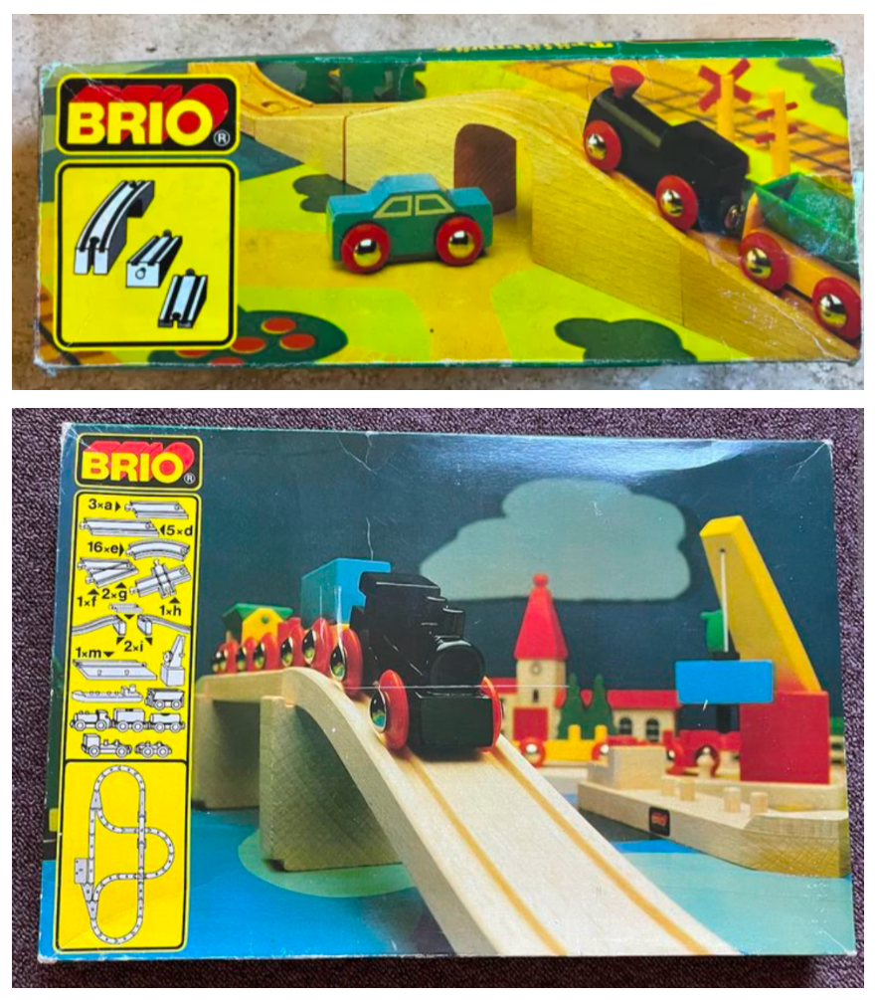
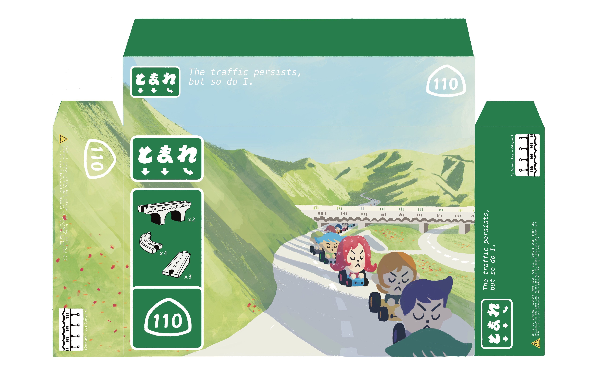
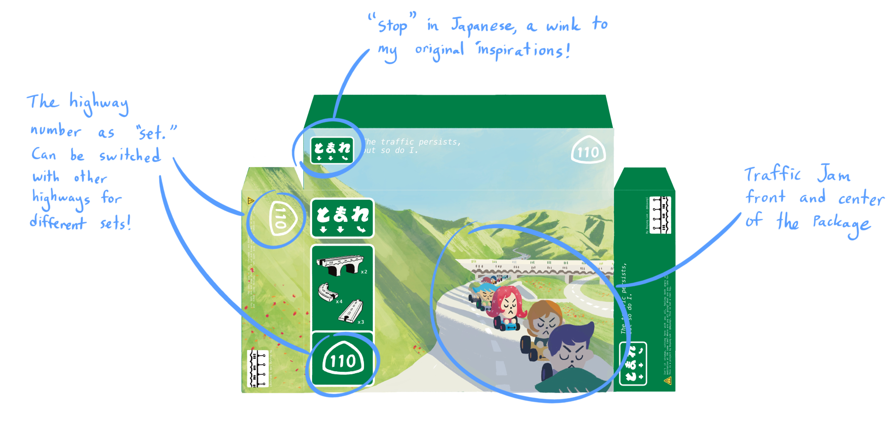
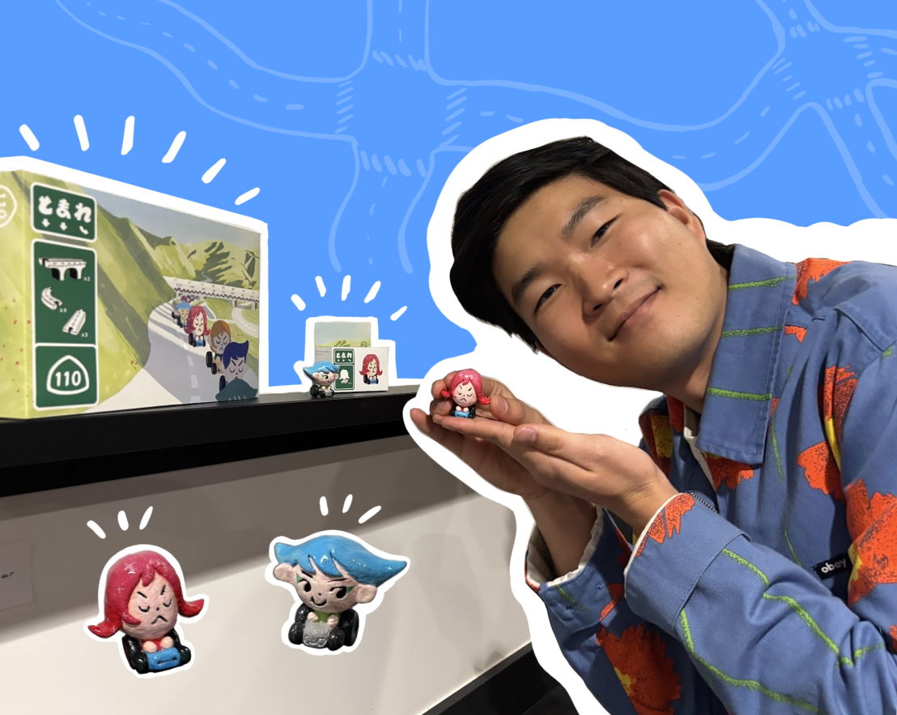

In 2025, I was invited by Titmouse Animation Studios to participate in their art show "Twisted Toys." To celebrate my move to Los Angeles, I decided to create a toy line that represented the quintessential LA experience: traffic.
Ceramic commuter toys, designed and handbuilt by me
During my exploration phase, I kept returning to a particular thread: "Growing up in Japan, I was surrounded by robust public transit along with many toys about trains and train tracks. What if instead I had grown up in Los Angeles, with toys about cars, roads and their traffic jams?" After looking through inspiration of train toy set designs, I found these beautiful vintage BRIO train packages:
Reference photos of BRIO train set packaging
I loved how the packaging design presented the actual track pieces. in a simple, yet bold way in the front of the packaging. I thought this design would be a perfect way to pay homage to the (in)famous highways of Los Angeles.
These were my design goals after the exploration phase:
- Have the packaging be modular enough so different highway systems could be represented, as if the 405, the 110 and the 5 were different "track sets"
- incorporate traffic sign iconography
- showcase the feeling of being in traffic jams, not just the cars themselves
Here is the final design layout for the "Route 110 Track Set":


While the theme is still "traffic jam," I still wanted the toy's feel to be bright and joyful. For the package, it was important to design it so that it'd be easy to incorporate other highways as new sets. For next steps, I am planning on creating the "405 Track Set," as well as finalizing packaging designs for the individual commuter drivers!

A successful show at Titmouse Animation Studios!